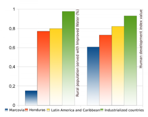

Hisotria: contexto
Contexto regional y Programa de Desarrollo Internacional

Honduras es uno de los países más pobres de América Central. Desde 2008, la ONG "Ingeniería Sin Fronteras Galicia desarrolla un programa de Cooperación Internacional en los municipios de Marcovia y San Francisco de Coray cuyo nombre en clave es "Fonsagua". La iniciativa busca fomentar el acceso al agua y el saneamiento como una vía para la erradicación de la pobreza.
El «Plan de Gestión Integral del Recurso Hídrico» se utiliza para estudiar, diseñar y planificar acciones relacionadas con el agua dentro de las directrices del programa: contruir sistemas hídricos y de saneamiento, empoderar a las comunidades e instituciones locales además de difundir el uso de tecnologías apropiadas y modelos sostenibles.
A lo largo del proceso, los técnicos tienen que administrar varias fuentes de datos para generar propuestas de agua y saneamiento. El objetivo de gvSIG Fonsagua es integrar en una herramienta única las capacidades para que los técnicos recopilen, analicen y generen información. Antes del desarrollo, esos procesos se hacían mediante el uso de diferentes aplicaciones en un proceso fundamentalmente manual.